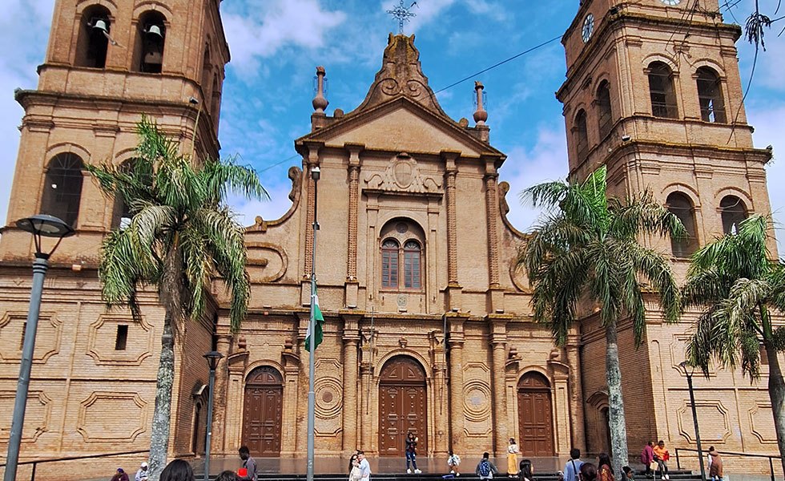
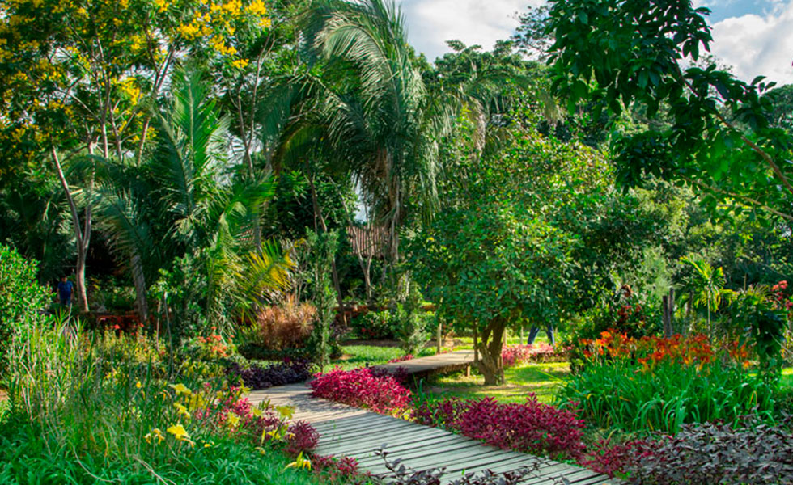
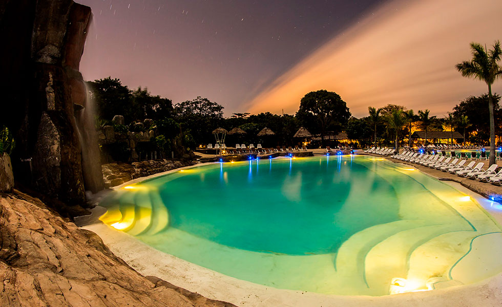

Santa Cruz
Santa Cruz de la Sierra, conocida simplemente como Santa Cruz, es una ciudad localizada en los llanos orientales de Bolivia, a orillas del río Piraí. Actualmente es la ciudad más poblada del país con un total aproximado de 1,5 millones de habitantes en 2022 y 2 millones en su área metropolitana. Es capital del departamento de Santa Cruz, el departamento con mayor producto regional bruto de Bolivia, y una de las ciudades más desarrolladas del país, con un indicador municipal de desarrollo sostenible elevado de 64.5
Lugares turisticos en La Paz:
El edificio-monumento que caracteriza el paisaje cruceño se divisa desde la lejanía con dos imponentes torres de ladrillo color tierra, que son el resultado de una obra popular que motivó a toda la población de la Santa Cruz de antaño a construir su propia Catedral Metropolitana.

Ubicacion a google maps
El jardín botánico posee más de 500 especies de flora que se encuentran en dos secciones, divididas por el riachuelo Guapilo de la cuenca del río Piraí, cuyas aguas corren en dirección este. Están representados dos tipos de bosques muy distintos entre sí del departamento de Santa Cruz: el Bosque Chaqueño y el Bosque Subtropical, y entre ellas un área de transición. Hay una laguna en la que podemos admirar a plantas acuáticas, aves acuáticas, y aves migratorias.

Ubicacion google maps
Para aquellos que buscan un respiro de la vida urbana, el Biocentro Güembé es el lugar perfecto. Este oasis natural situado en el corazón de la ciudad ofrece una conexión íntima con la biodiversidad local. En el aviario más grande de Bolivia, podrás admirar diversas especies de aves en su hábitat natural. También podrás sumergirte en piscinas naturales, disfrutar del mariposario y recorrer los senderos rodeados de flora exuberante.

Ubicacion google maps
Volver a pagina principal